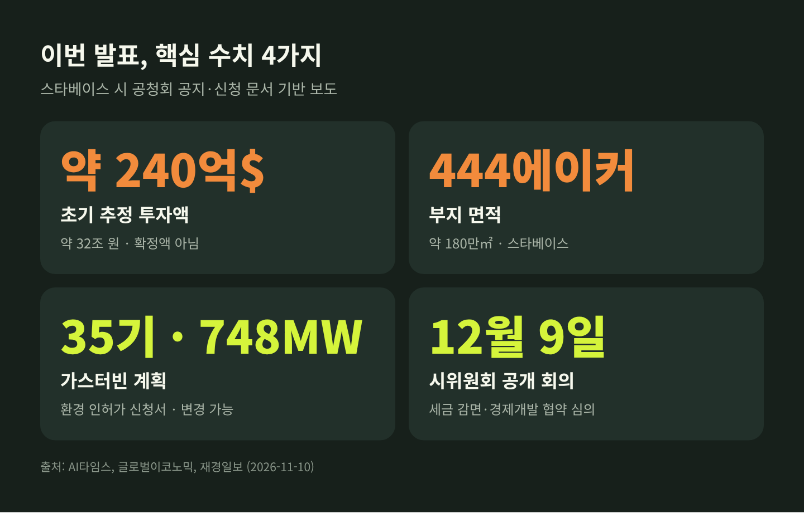
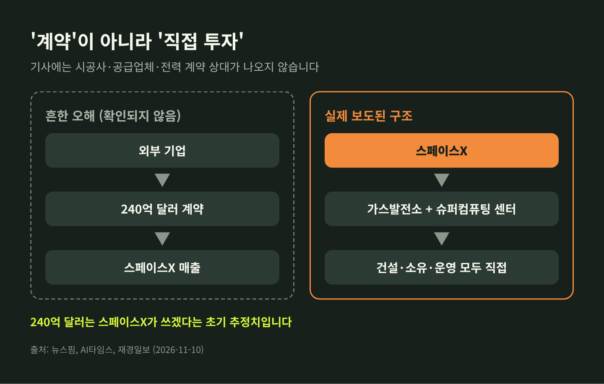
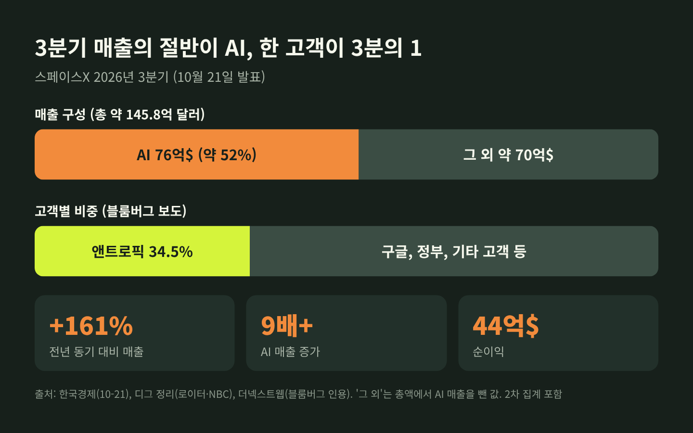
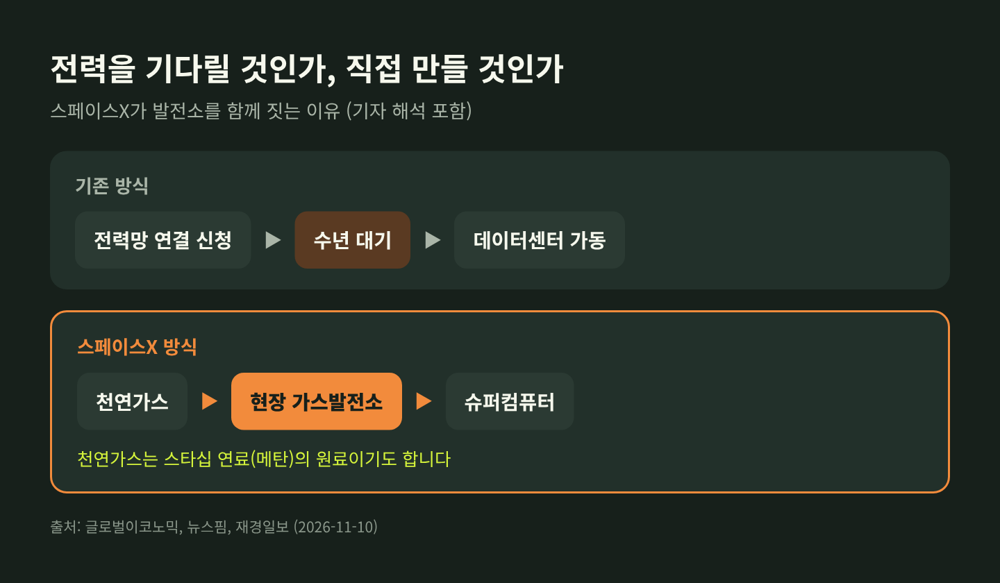
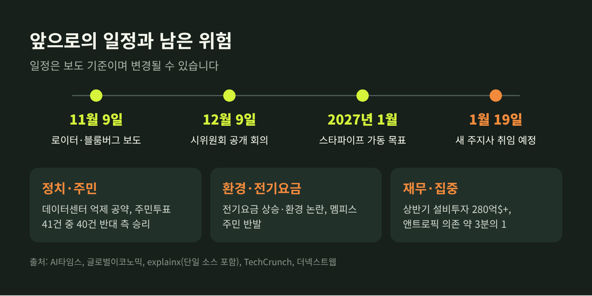

스페이스X 240억 달러 AI 데이터센터, 발전소까지 직접 짓는 이유

세 줄 요약
- 스페이스X가 텍사스 스타베이스에 가스발전소와 AI 데이터센터를 직접 짓겠다며 초기 추정 투자액 약 240억 달러(약 32조 원)를 공개했습니다.
- 일부 제목과 달리 '계약'이 아니라 스페이스X 자체의 투자 계획이며, 확정 금액이 아닌 추정치입니다.
- 11월 9일(현지시각) 뉴욕 증시에서 스페이스X 주가는 5.81% 올랐고, 12월 9일 시위원회 공개 회의가 첫 관문입니다.
이번 글에서는 스페이스X의 240억 달러 AI 데이터센터 계획을 정리해 보겠습니다. 무엇이 공개됐는지, 왜 발전소까지 직접 짓는지, 어떤 위험이 남아 있는지 차례로 살펴봅니다. 기업 실적과 투자 관련 내용은 참고용 정보이며 투자 권유가 아닙니다.
■ 무슨 일이 있었나: 계약이 아니라 직접 투자 계획
보도의 출발점은 스타베이스 시 웹사이트에 올라온 공청회 공지와 신청 문서입니다. 로이터와 블룸버그가 현지시각 11월 9일 이를 전했고, 국내에서는 10일 아침부터 기사가 이어졌습니다.
내용은 이렇습니다. 스페이스X는 텍사스주 남부 스타베이스의 발사 기지 일대, 약 444에이커(약 180만㎡) 부지에 가스 화력발전소와 슈퍼컴퓨팅 센터를 짓겠다는 개발안을 냈습니다. 건설도, 소유도, 운영도 스페이스X가 직접 맡습니다. 초기 추정 자본 투자액은 약 240억 달러이고, 여러 단계로 나눠 확장될 수 있습니다. 재산세 감면도 함께 신청했습니다.
여기서 짚어둘 점이 있습니다. 일부 보도 제목에는 '240억 달러 호재'라는 표현이 쓰였지만, 기사 어디에도 계약 상대방은 나오지 않습니다. 뉴스핌은 시공사나 공급업체, 전력 계약 상대가 기사에 언급되지 않았다고 전했습니다. 즉 누군가가 스페이스X에 240억 달러를 주는 이야기가 아니라, 스페이스X가 스스로 240억 달러 안팎을 쓰겠다는 이야기입니다. 이 구분이 글 전체를 읽는 열쇠입니다.
또 하나, 공고에 담기지 않은 정보가 많습니다. 세금 감면의 규모와 기간, 발전 용량, 컴퓨팅 시설의 규모는 공개되지 않았습니다. 그래서 240억 달러는 확정 예산이 아니라 출발선의 추정치로 보는 편이 정확합니다.

환경 인허가 신청서에는 천연가스 터빈 35기, 총 748MW 생산 계획이 담겼다고 AI타임스가 전했습니다. 인허가 과정에서 바뀔 수 있는 수치입니다.

■ 왜 발전소까지 직접 짓는가
AI 데이터센터의 병목은 이제 칩보다 전력이라는 말이 나옵니다. 텍사스에서 대형 전력 수요를 전력망에 연결하려면 수년을 기다려야 하는 경우가 있고, 재경일보와 뉴스핌은 스페이스X가 이 대기 시간을 우회하려는 것으로 풀이했습니다. 어디까지나 기자들의 해석입니다.
월스트리트저널 보도를 요약한 비즈니스리포트는 머스크의 방식을 '자체 전력 조달(Bring Your Own Power)'이라고 소개했습니다. 테네시와 미시시피에서도 가스터빈으로 데이터센터를 키웠고, 데이터센터 전력 용량이 약 2GW에서 2027년 말 10GW 안팎까지 커질 수 있다는 내용입니다. 이 수치는 8월 기사이고 2차 요약이라는 점은 감안하셔야 합니다.
머스크 본인의 설명도 있습니다. 연간 100GW 규모의 태양광 설비를 늘리고 있지만, 향후 몇 년간은 초기 가동과 전력망 보완을 위해 천연가스가 필요하다는 취지입니다. 천연가스는 슈퍼컴퓨터의 전력원이면서 스타십 연료인 메탄의 원료이기도 합니다. 발사 사업과 AI 사업이 한 부지에서 같은 자원을 나눠 쓰는 구도입니다.
예전에는 데이터센터를 짓는 쪽과 전기를 파는 쪽이 따로 있었습니다. 지금 스페이스X는 둘을 한 회사 안에 넣으려 합니다. 효율은 높아질 수 있지만, 발전과 연료, 컴퓨팅의 위험도 한 회사가 모두 떠안게 됩니다.

■ AI 사업은 어떻게 얽혀 있나
스페이스X는 올해 초 머스크의 xAI를 흡수했고, 이 부문은 현재 '슈퍼인텔리전스' 부문으로 불립니다. 다만 이번 240억 달러 계획이 xAI와 어떻게 연결되는지는 기사마다 다릅니다. 재경일보는 xAI 인수 이후 추진된 사업이라고 적었고, AI타임스에는 xAI 언급이 아예 없습니다. 소스에서 확인되는 것은 여기까지입니다.
배경에는 실적이 있습니다. 10월 21일 발표된 3분기 실적에서 스페이스X 매출은 약 146억 달러로 전년 동기 대비 161% 늘었습니다. 한국경제가 전한 시장 예상치는 127억 달러였습니다. 로이터와 NBC를 정리한 2차 자료에 따르면 순이익은 44억 달러였고, AI 매출은 9배 이상 늘어난 76억 달러로 전체의 약 52%를 차지했습니다.
흥미로운 점은 이 AI 매출의 성격입니다. 대부분은 자체 모델이 아니라 컴퓨팅 용량을 빌려주는 임대 수익으로 알려졌습니다. 고객으로는 앤트로픽, 구글, 리플렉션 AI가 거론됩니다. 블룸버그는 3분기 매출의 약 34.5%가 앤트로픽에서 나왔다고 전했습니다. 더넥스트웹이 인용한 앤트로픽의 IPO 서류에는 2029년까지 최대 1,205억 달러, 12월부터 월 약 31억 달러 규모, 2027년 초 이후 90일 사전 통보로 해지 가능하다는 내용이 담겼다고 합니다. 단일 보도이므로 확정 사실로 받아들이기보다 '보도에 따르면'으로 읽으시길 권합니다.

정리하면, 스페이스X는 로켓 회사에서 컴퓨팅 임대업까지 하는 회사로 바뀌고 있습니다. 임대할 용량이 있어야 매출이 늘고, 용량을 늘리려면 전력이 있어야 합니다. 텍사스 계획은 이 연결고리의 맨 아래 단계를 직접 쥐겠다는 선언으로 읽힙니다. 머스크가 실적 발표에서 용량의 절반 정도는 내부용으로 남기려 한다고 밝혔다는 점도 같은 맥락입니다. 다만 이 비율은 매달 달라질 수 있다고 합니다.
■ 시장은 어떻게 반응했나
11월 9일 뉴욕 증시에서 스페이스X(SPCX)는 5.81% 올랐습니다. 스페이스X는 6월 상장했고, 당시 공모가는 135달러, 기업가치는 약 1조 7,500억 달러였습니다. 따라서 비상장 기업이 아니라 매일 가격이 움직이는 상장사입니다.
주의할 점이 있습니다. 5.81% 상승이 이 보도 하나 때문이라는 설명은 언론의 해석이며, 다른 요인을 배제한 분석은 확인되지 않았습니다.
국내에서는 10일 오전 우주항공·부품주가 크게 움직였습니다. 뉴스핌 10시 기준으로 티앤이코리아는 25.69% 올랐고, LIG디펜스앤에어로스페이스 7.74%, 한화시스템 7.20%, 인텔리안테크 6.40%, 이수페타시스 5.85% 상승이었습니다. 아주경제의 10시 55분 기준 수치는 이보다 높게 집계됐습니다. 증권가는 데이터센터와 우주 인프라 투자가 빨라질 것이라는 기대감을 이유로 꼽았습니다. 다만 장중 수치는 시점마다 달라지므로 방향 정도만 참고하시면 충분합니다.
월가의 시각은 엇갈립니다. JP모건은 목표가를 240달러에서 500달러로 올렸고, HSBC는 150달러로 '보유' 의견을 유지했습니다. HSBC는 과거 데이터와 전망치가 부족하다는 점을 유의하라고 지적했습니다.
■ 남은 쟁점과 위험요인
가장 큰 변수는 정치입니다. 최근 텍사스 주지사 선거에서 승리한 지나 히노호사 당선인(민주당)은 데이터센터 난립을 억제하겠다고 공약했습니다. 2027년 1월 19일 취임 예정이라는 정리가 있으나 이는 단일 2차 자료입니다. 허가를 직접 거부하는 것이 아니라 정치적 위험이 커졌다는 의미에 가깝고, 이미 허가된 프로젝트는 대체로 진행될 것이라는 전문가 견해도 함께 전해집니다.
민심도 만만치 않습니다. AI타임스에 따르면 이번 중간선거에서 데이터센터 관련 지역 주민투표 41건 중 40건에서 반대 측이 이겼습니다. 글로벌이코노믹은 전기요금 상승과 환경 논란이 커지고 있고, 스페이스X의 멤피스 데이터센터에서도 주민 반발과 시위가 이어진다고 전했습니다.
재무 쪽 위험도 있습니다. 상반기 설비투자가 280억 달러 이상으로 전년 동기의 네 배 수준이라는 보도가 있고, 매출의 3분의 1 이상을 한 고객에 기대고 있습니다. 해지 조항이 사실이라면 수요 변동에 취약할 수 있습니다. 환경 쪽으로는 질소산화물 추정치가 연방 주요 배출원 심사 기준 바로 아래라는 정리가 있으나 이 또한 단일 소스입니다.

■ 전망: 앞으로 볼 일정
당장의 일정은 분명합니다. 12월 9일 스타베이스 시위원회가 공개 회의에서 세금 감면안과 경제개발 협약을 심의합니다. 2027년 1월에는 계열사 론스타 미네랄 디벨롭먼트의 천연가스 파이프라인 '스타파이프'(약 13km) 가동이 목표입니다. 다만 이 파이프라인은 원래 액체 메탄 시설용으로 알려졌고, 데이터센터 발전소와 직접 연결되는지는 확인되지 않았습니다.
이 소식이 주는 신호는 하나입니다. AI 경쟁이 알고리즘과 칩을 넘어 전력과 부지, 인허가를 누가 먼저 확보하느냐의 싸움으로 넘어가고 있다는 점입니다. 국내 증시에서 우주항공주뿐 아니라 통신 장비와 반도체 부품주까지 함께 움직인 것도, 시장이 이 사슬 전체를 보고 있다는 신호로 읽을 수 있습니다.
마지막으로 한 가지만 덧붙이겠습니다. 이번 발표는 '호재'라는 제목보다 '계획의 공개'라는 사실이 더 중요합니다. 240억 달러는 약속된 돈이 아니라, 아직 승인받지 못한 숫자입니다.
"숫자가 크다고 확정은 아니다." 12월 9일의 회의와 새 주지사의 첫 결정이 이 계획의 무게를 가늠하게 할 것입니다.
출처
- 글로벌이코노믹, 2026-11-10: https://www.g-enews.com/article/Securities/2026/11/202611100729514364e250e8e188_1
- AI타임스, 2026-11-10: https://www.aitimes.com/news/articleView.html?idxno=217214
- 뉴스핌, 2026-11-10: https://newspim.com/news/view/20261110000380
- 재경일보, 2026-11-10: https://news.jkn.co.kr/post/1083375
- 아주경제, 2026-11-10: https://www.ajunews.com/view/20261110105219705
- 한국경제, 2026-10-21: https://www.hankyung.com/article/202610217082i
- The Next Web, 2026-10-29: https://thenextweb.com/news/anthropic-spacex-largest-customer-customer-b
- TechCrunch, 2026-08-04: https://techcrunch.com/2026/08/04/spacex-doubles-revenues-on-anthropic-and-google-compute-deals-starlink-growth/
- Baton Rouge Business Report(WSJ 요약), 2026-08-13: https://www.businessreport.com/article/as-ai-power-demand-soars-musk-turns-to-natural-gas
※ 본 글은 뉴스 해설이며 투자 권유가 아닙니다. 수치는 보도 시점 기준이며 변경될 수 있습니다.
#스페이스X #AI데이터센터 #가스발전소 #스타베이스 #텍사스 #데이터센터전력 #SPCX #산업뉴스